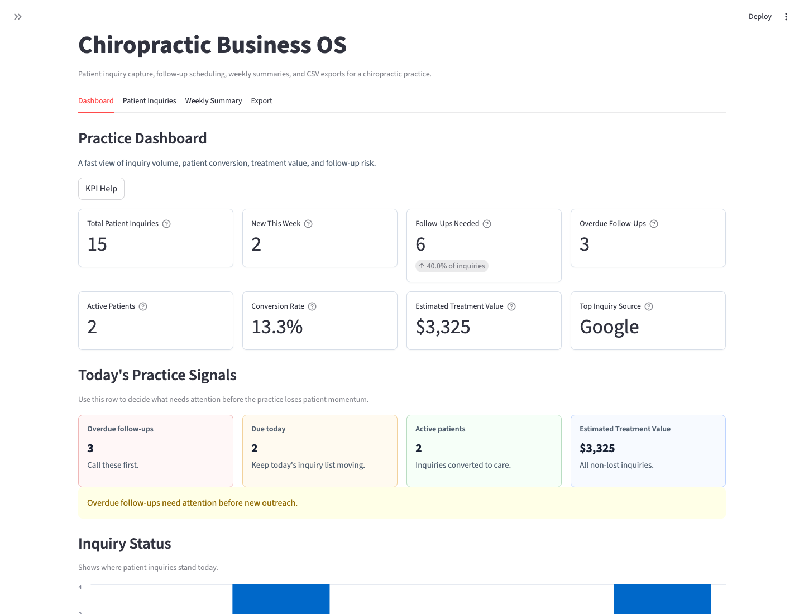
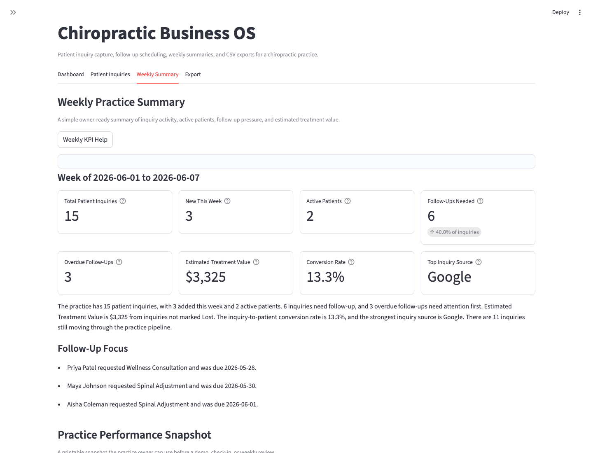
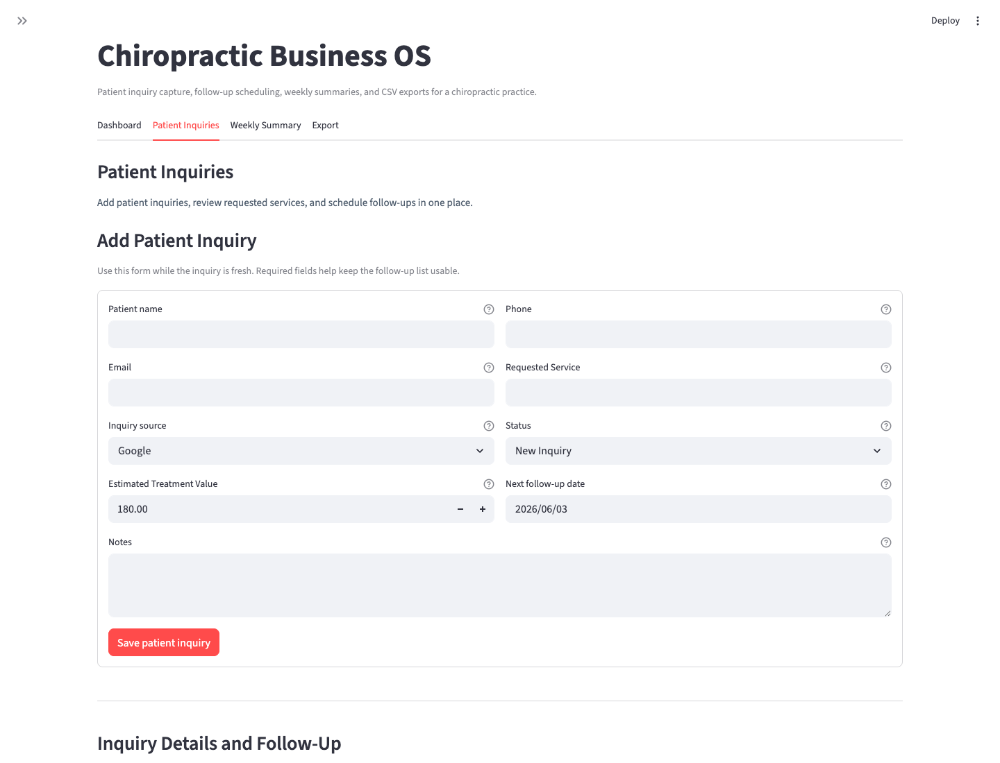
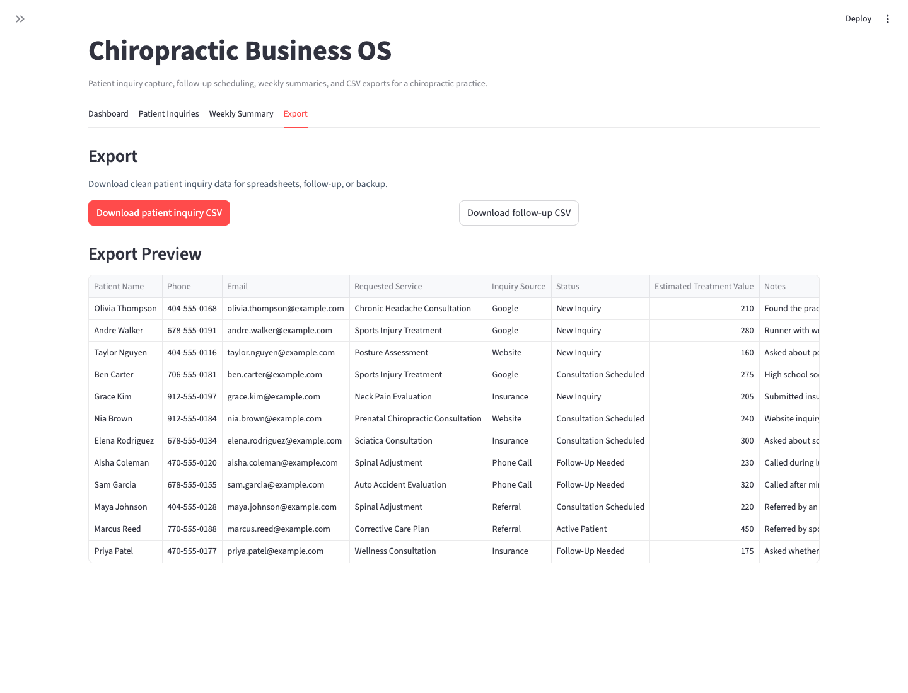

Missed follow-ups
Overdue calls and messages can hide inside notes, spreadsheets, or memory.

For chiropractic practice owners
See patient inquiries, follow-ups, and estimated treatment value in one simple practice dashboard so fewer opportunities disappear between calls, spreadsheets, and front-desk notes.
Problem
Calls, website forms, referrals, insurance questions, and Google inquiries can land in different places. When nobody has one clear owner view, follow-ups can be missed and the practice may not know which inquiries are turning into active patients.
Overdue calls and messages can hide inside notes, spreadsheets, or memory.
Practice owners often have to ask the front desk what happened instead of seeing it quickly.
Estimated treatment value is hard to see when inquiries are not tracked consistently.
Solution
The Chiropractic Business OS gives the owner and front desk one place to review patient inquiries, see who needs follow-up, and understand weekly practice activity without replacing the tools already used for clinical records or scheduling.

Features
The current demo is intentionally narrow: track inquiries in one place, improve follow-up consistency, and review the numbers that matter before a patient opportunity goes cold.
Capture name, contact details, requested service, source, status, value, and notes.
Prioritize overdue and due-today follow-ups before inquiries go cold.
Review total inquiries, active patients, Inquiry-to-Patient Rate, and top inquiry source.
Use a plain-English snapshot for owner review and front-desk accountability.
Download patient-friendly exports for review, backup, or handoff.
Designed as a practical demo and pilot workflow, not a large software project.
Fit
This is a focused inquiry and follow-up dashboard. It works best when the problem is scattered tracking, not a need for a full clinical or billing system.
Trust
It is built to be easy to understand before a call, easy to demo with fake data, and clear about what it does and does not do.
If a practice receives 10 inquiries per month, misses follow-up on 2, and recovers 1 patient opportunity by reviewing the follow-up queue, the potential value recovered can help justify a simple tracking workflow. This is an example, not a guarantee.
Estimate
Use conservative numbers to estimate potential revenue at risk from missed follow-ups. This is a conversation tool, not a guarantee of recovered revenue.
Screenshots
These screenshots use fake demo data and show the current outreach-ready version.


Demo Video
The video explains each tab and how the dashboard helps with inquiry follow-up.
FAQ
No. Your EHR remains the clinical source of truth. This focuses on tracking inquiries in one place and improving follow-up consistency before or around booking.
No. It helps your team see who needs follow-up so your existing scheduling process can happen with better context.
The demo uses fake data. Production use with real patient data requires separate hosting, privacy, access-control, and compliance planning.
Spreadsheets can work. This adds a clearer Practice Performance Dashboard, weekly summary, follow-up urgency, and patient-friendly exports without pretending to be a full EHR.
The demo is designed to show the main story quickly: how many inquiries came in, who needs follow-up, which inquiries became active patients, and what estimated treatment value is still open.
Contact
Request a short walkthrough using fake demo data. You can review the workflow, ask fit questions, and decide whether a simple inquiry dashboard is worth piloting before any production setup.
Request a demo walkthrough